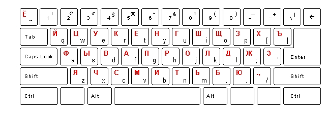

Klawiatura i wersje jêzykowe
Program Profesor Henry 6.0 mo¿na wykorzystaæ do samodzielnej nauki równie¿ innych jêzyków obcych, a tak¿e do uczenia siê wszelkich informacji, które trzeba opanowaæ pamiêciowo (np. dat historycznych). W tym celu nale¿y wprowadziæ lub zaimportowaæ do programu odpowiedni¹ bazê. O tworzeniu i dodawaniu w³asnej bazy czytaj w rozdziale Dodawanie s³ówek i zdañ oraz tworzenie nowej bazy. Trzeba jednak pamiêtaæ, ¿e uczenie siê s³ówek w innym jêzyku obcym mo¿e wymagaæ dostosowania ustawieñ klawiatury ze wzglêdu na znaki nie wystêpuj¹ce w polskim alfabecie. Poni¿ej krótka instrukcja dotycz¹ca wpisywania liter charakterystycznych dla danego jêzyka oraz sposobu instalowania odpowiedniej klawiatury:
 jêzyk niemiecki
jêzyk niemiecki
jêzyk rosyjski
jêzyk francuski
jêzyk w³oski
jêzyk hiszpañski
klawiaturka
inne
Klawiaturka
Dla wygody U¿ytkownika wprowadzono do programu funkcjê klawiaturki. Dziêki niej mo¿na szybko i wygodnie wprowadziæ odpowiednie znaki w jêzyku francuskim, hiszpañskim, niemieckim oraz w³oskim (w zale¿noœci jaki jêzyk wybraliœmy w ekranie Parametry bazy), bez potrzeby korzystania ze skrótów klawiaturowych. Dla jêzyka angielskiego klawiaturka jest niedostêpna. Klawiaturka pojawia siê automatycznie na ekranie æwiczenia w trybie wpisywania odpowiedzi.
Jêzyk niemiecki
Czcionka niemiecka
Znaki typowe dla jêzyka niemieckiego mo¿na wpisywaæ korzystaj¹c z tablicy znaków programu Windows (np. ë = Alt+0235) albo przestawiaj¹c jêzyk klawiatury na niemiecki.
Instalacja klawiatury niemieckiej
Znaki typowe dla jêzyka niemieckiego uzyskujemy w programie za pomoc¹ nastêpuj¹cych skrótów klawiatury (lewy Ctrl):
ä = Ctrl + a ö = Ctrl +o ß = Ctrl + s ü = Ctrl + u
Windows 2000
Aby zainstalowaæ klawiaturê niemieck¹, nale¿y w Panelu sterowania wybraæ ikonkê Klawiatura, zak³adkê Ustawienia regionalne, do okna Zainstalowane ustawienia regionalne, wcisn¹æ przycisk Dodaj, z widocznej listy wybraæ Niemiecki. W tym momencie system mo¿e poprosiæ o w³o¿enie do napêdu p³yty instalacyjnej Windows.
Windows XP
Aby zainstalowaæ klawiaturê niemieck¹, nale¿y w Panelu sterowania wybraæ ikonkê Opcje regionalne i jêzykowe, zak³adkê Jêzyki, przycisk Szczegó³y, nastêpnie wyœwietli siê okno Us³ugi tekstowe i jêzyki, w którym nale¿y wybraæ zak³adkê Ustawienia i wcisn¹æ przycisk Dodaj. Z widocznej listy wybraæ Niemiecki i Uk³ad klawiatury Niemiecki.
Windows Vista
Aby zainstalowaæ klawiaturê niemieck¹, nale¿y w Panelu sterowania wybraæ ikonkê Opcje regionalne i jêzykowe i zak³adkê Klawiatury i Jêzyki. Nastêpnie nacisn¹æ przycisk Zmieñ klawiatury i klikn¹æ Dodaj. Z widocznej listy wybraæ Niemiecki i Uk³ad klawiatury Niemiecki.
Jeœli na zak³adce Jêzyk (Ustawienia regionalne) jest zaznaczone pole wyboru W³¹czaj wskaŸnik na pasku zadañ, a na komputerze s¹ zainstalowane co najmniej dwa jêzyki klawiatury, na pasku zadañ jest wyœwietlany wskaŸnik reprezentuj¹cy domyœlny jêzyk. Aby szybko prze³¹czaæ siê miêdzy jêzykami, kliknij ten wskaŸnik, a nastêpnie jêzyk, którego chcesz u¿ywaæ. Zmiany jêzyka nale¿y dokonaæ w trakcie pracy programu przy pomocy skrótu klawiszowego lewy Alt + Shift.
Jêzyk rosyjski
Czcionka rosyjska
Krój czcionki rosyjskiej (cyrylicy) jest zupe³nie inny ni¿ ³aciñskiej. Z tego te¿ powodu nale¿y nie tylko nauczyæ siê wygl¹du i znaczenia liter, ale te¿ ich rozmieszczenia na klawiaturze. Poni¿ej zamieszczamy rozrysowan¹ schematycznie rosyjsk¹ klawiaturê. Wszystkim osobom, które nie posiadaj¹ rosyjskiej klawiatury, radzimy wydrukowaæ poni¿szy schemat i korzystaæ z niego w razie potrzeby.

Instalacja klawiatury rosyjskiej
Windows 2000
Aby móc wpisywaæ rosyjsk¹ czcionkê, nale¿y najpierw dodaæ cyrylicê, a nastêpnie rosyjsk¹ klawiaturê. W tym celu nale¿y najpierw w Panelu sterowania wybraæ Opcje regionalne, zak³adkê Ogólne, Ustawienia jêzykowe dla systemu i dodaæ Cyrylicê. W tym momencie system mo¿e poprosiæ o w³o¿enie do napêdu p³yty instalacyjnej Windows.
Dopiero po zainstalowaniu cyrylicy, nale¿y przejœæ na zak³adkê Ustawienia regionalne, do okna Zainstalowane ustawienia regionalne, wcisn¹æ przycisk Dodaj, z widocznej listy wybraæ Rosyjski i Uk³ad klawiatury Rosyjski.
Windows XP
Aby zainstalowaæ klawiaturê rosyjsk¹, nale¿y w Panelu sterowania wybraæ ikonkê Opcje regionalne i jêzykowe, zak³adkê Jêzyki, przycisk Szczegó³y, nastêpnie wyœwietli siê okno Us³ugi tekstowe i jêzyki, w którym nale¿y wybraæ zak³adkê Ustawienia i wcisn¹æ przycisk Dodaj. Z widocznej listy wybraæ Rosyjski i Uk³ad klawiatury Rosyjski.
Windows Vista
Aby zainstalowaæ klawiaturê rosyjsk¹, nale¿y w Panelu sterowania wybraæ ikonkê Opcje regionalne i jêzykowe i zak³adkê Klawiatury i Jêzyki. Nastêpnie nacisn¹æ przycisk Zmieñ klawiatury i klikn¹æ Dodaj. Z widocznej listy wybraæ Rosyjski i Uk³ad klawiatury Rosyjski.
Jeœli na zak³adce Jêzyk (Ustawienia regionalne) jest zaznaczone pole wyboru W³¹czaj wskaŸnik na pasku zadañ, a na komputerze s¹ zainstalowane co najmniej dwa jêzyki klawiatury, na pasku zadañ jest wyœwietlany wskaŸnik reprezentuj¹cy domyœlny jêzyk. Aby szybko prze³¹czaæ siê miêdzy jêzykami, kliknij ten wskaŸnik, a nastêpnie jêzyk, którego chcesz u¿ywaæ. Zmiany jêzyka nale¿y dokonaæ w trakcie pracy programu przy pomocy skrótu klawiszowego lewy Alt + Shift.
Jêzyk francuski
Czcionka francuska
W jêzyku francuskim wystêpuj¹ litery, których nie ma w jêzyku polskim. Francuskie symbole mo¿na te¿ wpisywaæ albo korzystaj¹c z tablicy znaków programu Windows (np. ë = Alt+0235) albo przestawiaj¹c jêzyk klawiatury na francuski.
Klawiatura francuska
Windows 2000
Aby zainstalowaæ klawiaturê francusk¹, nale¿y w Panelu sterowania wybraæ ikonkê Klawiatura, zak³adkê Ustawienia regionalne, do okna Zainstalowane ustawienia regionalne, wcisn¹æ przycisk Dodaj, z widocznej listy wybraæ Francuski standardowy. W tym momencie system mo¿e poprosiæ o w³o¿enie do napêdu p³yty instalacyjnej Windows.
Windows XP
Aby zainstalowaæ klawiaturê francusk¹, nale¿y w Panelu sterowania wybraæ ikonkê Opcje regionalne i jêzykowe, zak³adkê Jêzyki, przycisk Szczegó³y, nastêpnie wyœwietli siê okno Us³ugi tekstowe i jêzyki, w którym nale¿y wybraæ Zak³adkê Ustawienia i wcisn¹æ przycisk Dodaj. Z widocznej listy wybraæ Francuski standardowy i postêpowaæ zgodnie z poleceniami pojawiaj¹cymi siê na ekranie.
Windows Vista
Aby zainstalowaæ klawiaturê francusk¹, nale¿y w Panelu sterowania wybraæ ikonkê Opcje regionalne i jêzykowe i zak³adkê Klawiatury i Jêzyki. Nastêpnie nacisn¹æ przycisk Zmieñ klawiatury i klikn¹æ Dodaj. Z widocznej listy wybraæ Francuski i Uk³ad klawiatury Francuski.
Jeœli na zak³adce Jêzyk (Ustawienia regionalne) jest zaznaczone pole wyboru W³¹czaj wskaŸnik na pasku zadañ, a na komputerze s¹ zainstalowane co najmniej dwa jêzyki klawiatury, na pasku zadañ jest wyœwietlany wskaŸnik reprezentuj¹cy domyœlny jêzyk. Aby szybko prze³¹czaæ siê miêdzy jêzykami, kliknij ten wskaŸnik, a nastêpnie jêzyk, którego chcesz u¿ywaæ. Zmiany jêzyka nale¿y dokonaæ w trakcie pracy programu przy pomocy skrótu klawiszowego lewy Alt + Shift.
Jêzyk w³oski
Czcionka w³oska
W jêzyku w³oskim wystêpuj¹ litery, których nie ma w jêzyku polskim. W³oskie symbole mo¿na wpisywaæ albo korzystaj¹c z tablicy znaków programu Windows albo przestawiaj¹c jêzyk klawiatury na w³oski.
Klawiatura w³oska
Windows 2000
Aby zainstalowaæ klawiaturê w³osk¹, nale¿y w Panelu sterowania wybraæ ikonkê Klawiatura, zak³adkê Ustawienia regionalne, do okna Zainstalowane ustawienia regionalne, wcisn¹æ przycisk Dodaj, z widocznej listy wybraæ w³oski standardowy. W tym momencie system mo¿e poprosiæ o w³o¿enie do napêdu p³yty instalacyjnej Windows.
Windows XP
Aby zainstalowaæ klawiaturê w³osk¹, nale¿y w Panelu sterowania wybraæ ikonkê Opcje regionalne i jêzykowe, zak³adkê Jêzyki, przycisk Szczegó³y, nastêpnie wyœwietli siê okno Us³ugi tekstowe i jêzyki, w którym nale¿y wybraæ Zak³adkê Ustawienia i wcisn¹æ przycisk Dodaj. Z widocznej listy wybraæ w³oski standardowy i postêpowaæ zgodnie z poleceniami pojawiaj¹cymi siê na ekranie.
Windows Vista
Aby zainstalowaæ klawiaturê w³osk¹, nale¿y w Panelu sterowania wybraæ ikonkê Opcje regionalne i jêzykowe i zak³adkê Klawiatury i Jêzyki. Nastêpnie nacisn¹æ przycisk Zmieñ klawiatury i klikn¹æ Dodaj. Z widocznej listy wybraæ W³oski i Uk³ad klawiatury W³oski.
Jeœli na zak³adce Jêzyk (Ustawienia regionalne) jest zaznaczone pole wyboru W³¹czaj wskaŸnik na pasku zadañ, a na komputerze s¹ zainstalowane co najmniej dwa jêzyki klawiatury, na pasku zadañ jest wyœwietlany wskaŸnik reprezentuj¹cy domyœlny jêzyk. Aby szybko prze³¹czaæ siê miêdzy jêzykami, kliknij ten wskaŸnik, a nastêpnie jêzyk, którego chcesz u¿ywaæ. Zmiany jêzyka nale¿y dokonaæ w trakcie pracy programu przy pomocy skrótu klawiszowego lewy Alt + Shift.
Jêzyk hiszpañski
Czcionka hiszpañska
W jêzyku hiszpañskim wystêpuj¹ litery i znaki interpunkcyjne, których nie ma w jêzyku polskim. Hiszpañskie symbole mo¿na wpisywaæ albo korzystaj¹c z tablicy znaków programu Windows albo przestawiaj¹c jêzyk klawiatury na hiszpañski.
Klawiatura hiszpañska
Windows 2000
Aby zainstalowaæ klawiaturê hiszpañsk¹, nale¿y w Panelu sterowania wybraæ ikonkê Klawiatura,
zak³adkê Ustawienia regionalne, okno Zainstalowane ustawienia regionalne, wcisn¹æ przycisk
Dodaj, z widocznej listy wybraæ Hiszpañski miêdzynarodowy. W tym momencie system mo¿e poprosiæ o w³o¿enie do napêdu p³yty instalacyjnej Windows.
Windows XP
Aby zainstalowaæ klawiaturê hiszpañsk¹, nale¿y w Panelu sterowania wybraæ ikonkê Opcje regionalne
i jêzykowe, zak³adkê Jêzyki, przycisk Szczegó³y, nastêpnie wyœwietli siê okno Us³ugi tekstowe
i jêzyki, w którym nale¿y wybraæ Zak³adkê Ustawienia i wcisn¹æ przycisk Dodaj. Z widocznej listy
wybraæ Hiszpañski miêdzynarodowy i postêpowaæ zgodnie z poleceniami pojawiaj¹cymi siê na ekranie.
Windows Vista
Aby zainstalowaæ klawiaturê hiszpañsk¹, nale¿y w Panelu sterowania wybraæ ikonkê Opcje regionalne i jêzykowe i zak³adkê Klawiatury i Jêzyki. Nastêpnie nacisn¹æ przycisk Zmieñ klawiatury i klikn¹æ Dodaj. Z widocznej listy wybraæ Hiszpañski i Uk³ad klawiatury Hiszpañski.
Jeœli na zak³adce Jêzyk (Ustawienia regionalne) jest zaznaczone pole wyboru W³¹czaj wskaŸnik na pasku zadañ, a na komputerze s¹ zainstalowane co najmniej dwa jêzyki klawiatury, na pasku zadañ jest wyœwietlany wskaŸnik reprezentuj¹cy domyœlny jêzyk. Aby szybko prze³¹czaæ siê miêdzy jêzykami, kliknij ten wskaŸnik, a nastêpnie jêzyk, którego chcesz u¿ywaæ. Zmiany jêzyka nale¿y dokonaæ w trakcie pracy programu przy pomocy skrótu klawiszowego lewy Alt + Shift.
Inne
Istnieje mo¿liwoœæ wprowadzenia innych jêzyków ni¿ wymienione. Teraz jest to znacznie u³atwione dziêki wprowadzeniu obs³ugi kodowania znaków Unicode. Jednak, je¿eli chodzi o jêzyki orientalne, nie gwarantujemy, ¿e znaki u¿ywane do ich zapisu bêd¹ poprawnie wyœwietlane. Mo¿emy spróbowaæ zmieniæ ustawienia czcionki, na tak¹, która obs³uguje dany system zapisu, jednak mo¿e siê zdarzyæ, ¿e nawet wtedy nie wszystkie wyra¿enia bêd¹ poprawnie wyœwietlane.